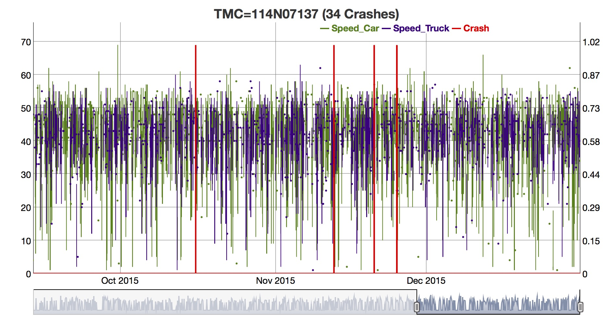
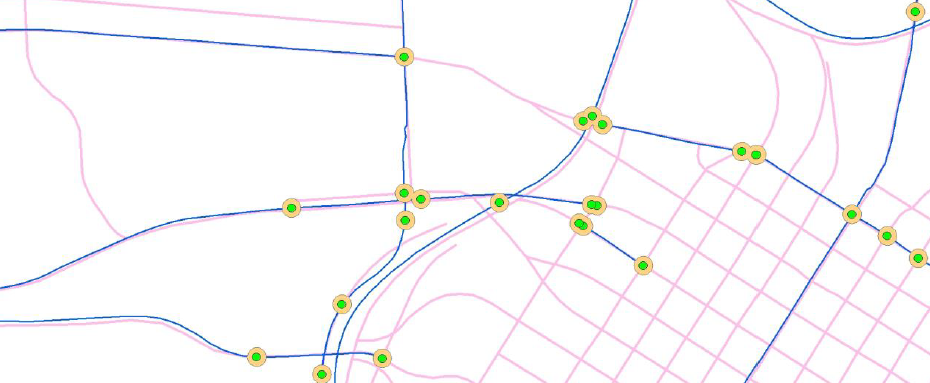
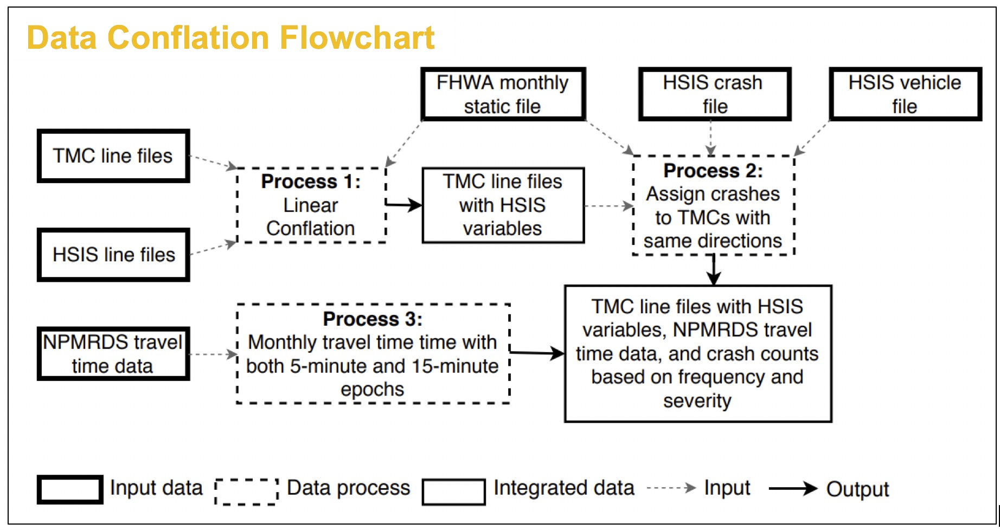
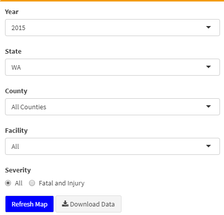

Application of Big Data in Highway Safety Modeling
Subasish Das
March 11, 2021

Outline
- Overview
- Data Preparation
- Exploratory Data Analysis
- Statistical Models
- Decision Support Tool
- Research Products
- Ongoing Projects
Overview
- The Highway Safety Manual (HSM) models do not account for aggegate level operational variations.
- This is partyly due to the lack of sufficient quality data with the adequate granularity for an analysis that would allow characterizing shorter periods.
Overview
- Objective
- Integrate operational big data (aggregate level vehicle travel speed data, and weather data) with geometric and traffic data to identify the relationship of speed and crashes
- Product
- Create a protype Decision Support Tool based on expected crashes
Key Research Questions
- Q1: Do different speed measures contribute to crash outcomes?
- Q2: Is there more variability in speeds just prior to a crash?
Data Preparation
- Two States: Washington, and Ohio
- Four Databases
- Highway Safety Information System (HSIS)
- Highway Performance Monitoring System (HPMS)
- National Performance Management Research Data Set (NPMRDS)
- Automated Surface Observing System (ASOS)
- Year: 2015
Major Issues
- Issue 1: Speed data- quantity, usability
- Issue 2: Two linear systems- crash/roadway geometry/traffic volume data and speed data
Issue 1
- Solution: NPMRDS data are available to DOTs / able to explore greater number of speed measures

Issue2
- Solution: Conflation of two linear systems with quality checking


Washington Rural Roadway Crashes (2015)
Ohio Rural Roadway Crashes (2015)
Options

- Year
- 2015
- County
- All counties
- Select a county
- Faciltity Type
- Rural two lane
- Rural Interstate
- Rural multilane divided
- Rural multilane undivided
- Rural others
- Severity
- All
- Fatal and Injury
Decision Support Tool
App link: https://ruralspeedsafety.shinyapps.io/rss_sdi/
Answer to Questions
- Q1: Do different speed measures contribute to crash outcomes?
- Yes!
- Developed a prototype of Decision Support Tool to illustrate number of expected crashes on segments
- Q2: Is there more variability in speeds just prior to a crash?
- Yes!
- Developed models that use travel speed to classify crash and non-crash event
Research Products
- Project Website
- https://www.transportation.gov/office-policy/transportation-policy/rural-speed-safety-pilot-project
- Final Report
- https://www.transportation.gov/sites/dot.gov/files/2020-05/Rural%20Speed%20Safety%20Summary%20Report.pdf
- Executive Summary Report
- https://www.transportation.gov/sites/dot.gov/files/2020-05/Rural%20Speed%20Safety%20Executive%20Summary%20Report.pdf
- Peer Reviewed Journal Articles
- Das, S., S. Geedipally, and K. Fitzpatrick. Inclusion of speed and weather measures in safety performance functions for rural roadways. IATSS Research, 2020.
- Das, S. and L. White. RuralSpeedSafetyX: Interactive decision support tool to improve safety. SoftwareX. 2020.
- Das, S., and S. Geedipally. Rural Speed Safety Project for USDOT Safety Data Initiative: Findings and Outcomes. ITE Journal. September, 2020
- Decision Support Tool
- https://ruralspeedsafety.shinyapps.io/rss_sdi/
- Feature
- https://tti.tamu.edu/researcher/big-data-goes-country-integrating-speed-and-weather-measures-to-study-rural-roadway-safety/
Ongoing Projects
- Develop a Real-Time Decision Support Tool for Rural Roadway Safety Improvements (TxDOT Project)
- Developing Speed CMFs (FHWA Project)
- Autonomous Delivery Vehicle as a Disruptive Technology: How to Shape the Future with a Focus on Safety? (SafeD Project)